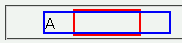

2003-09-03修正。補足を変更。
marginプロパティで値を一括指定すると、対象となる要素によっては指定が無視されることがある。
<div style="width:4em; margin-left:4em; border:2px solid red;"> <div style="margin:0 -2em; border:2px solid blue;">A</div> </div>
子要素（青いボーダー）は親要素（赤いボーダー）から左右に2文字分ずつはみ出させています。
※この例で示したバグはMacIE5.1で修正済みです。
Moz1.0.1での表示（標準モード）
margin-leftプロパティなどで個別に指定すると、このバグを回避できます。
<div style="width:4em; margin-left:4em; border:2px solid red;"> <div style="margin-left:-2em; margin-right:-2em; border:2px solid blue;">A</div> </div>
marginプロパティによる指定の影響を受ける要素は以下の通りです。
margin: auto; のような指定でセンタリングできない。（MacIE5.1でバグ修正）margin: 数値 auto; のような指定でセンタリングできない。margin: auto; 指定が無視される。
<div style="overflow:auto; margin:auto; width……">content……</div>親にdiv要素を追加し、そちらにマージンを指定することで回避できます。
<div style="margin:auto; width……"> <div style="overflow:auto;……">content……</div> </div>
詳しくはCSS2対応状況ガイド：marginを参照してください。
MacIE4.1/5.0で不具合の発生が確認されています。